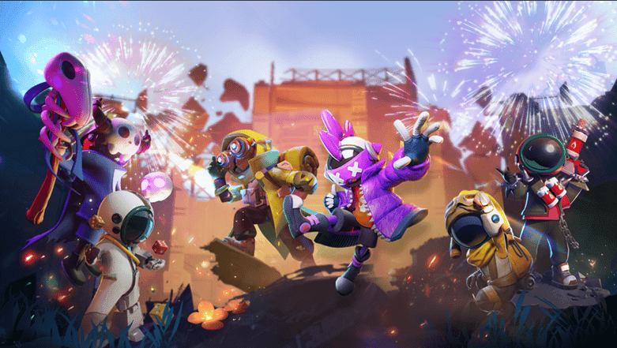

Rekomendasi Role Terbaik di Super Sus 2025: Temukan Gaya Bermain yang Cocok untukmu!

Super Sus adalah game deduksi sosial yang menawarkan pengalaman bermain unik dengan elemen role-play yang menarik. Dengan konsep dasar yang mirip dengan Among Us, Super Sus berhasil menghadirkan dimensi baru dalam gameplay-nya. Game ini memberikan para pemain kesempatan untuk mengasah strategi, berpikir kritis, dan berkomunikasi secara efektif melalui berbagai role yang memiliki kemampuan khusus. Baik sebagai bagian dari tim yang ingin mencapai kemenangan bersama maupun sebagai pihak yang menciptakan kekacauan, Super Sus menyajikan pengalaman bermain yang menantang dan seru.
Setiap role dalam Super Sus dirancang dengan tugas, kemampuan, dan tujuan yang berbeda, sehingga menciptakan dinamika permainan yang selalu segar. Misalnya, ada role yang fokus pada mendukung tim dengan keterampilan tertentu, sementara lainnya berorientasi pada manipulasi atau sabotase. Hal ini memungkinkan pemain untuk memilih gaya bermain yang paling sesuai dengan kepribadian dan preferensi mereka. Selain itu, fleksibilitas dalam memilih role memberikan ruang bagi pemain untuk bereksperimen, mengasah keterampilan baru, dan memahami pola permainan yang terus berkembang.
Dalam artikel ini, kita akan mengupas berbagai rekomendasi role yang tersedia di Super Sus dan memberikan panduan untuk memilih role yang paling sesuai dengan gaya bermainmu. Dengan memahami setiap role secara mendalam, kamu tidak hanya bisa meningkatkan performa permainan, tetapi juga menikmati pengalaman yang lebih seru dan mendalam. Siap menemukan role favoritmu? Yuk, simak pembahasannya!
1. Crewmate Roles: Untuk Kamu yang Suka Kerja Sama Tim
Sebagai crewmate, tugas utama kamu adalah menyelesaikan misi dan menemukan siapa impostor di antara pemain. Jika kamu suka bermain dengan penuh strategi dan kerja sama, role-role berikut bisa menjadi pilihan yang cocok. Dalam setiap pertandingan, peran sebagai crewmate menuntut keahlian dalam mengelola waktu, memprioritaskan tugas, dan berkomunikasi efektif dengan tim untuk mendukung keberhasilan misi. Dengan memahami berbagai tantangan yang dihadapi sebagai crewmate, kamu akan mampu beradaptasi dengan situasi permainan yang dinamis, meningkatkan peluang kemenangan secara keseluruhan.
Engineer: Fokus pada Perbaikan dan Dukungan Tim
Engineer memiliki kemampuan unik untuk memperbaiki sabotase dengan cepat. Role ini sangat ideal untuk pemain yang suka mendukung tim tanpa banyak sorotan. Dengan fokus pada perbaikan dan menyelesaikan tugas, Engineer menjadi ujung tombak dalam mencegah impostor mengacaukan sistem kapal.
Medic: Melindungi Anggota Tim
Jika kamu suka melindungi pemain lain, Medic adalah pilihan tepat. Dengan kemampuan untuk memberikan perlindungan kepada pemain tertentu, Medic bisa menjadi penentu dalam menjaga tim tetap utuh. Medic harus berhati-hati memilih siapa yang akan dilindungi, karena salah langkah bisa memberikan keuntungan kepada impostor.
Detective: Penyidik Handal yang Membongkar Kebenaran
Bagi pemain yang suka menyelidiki, Detective adalah role yang sempurna. Dengan kemampuan untuk menganalisis jejak pemain lain, Detective membantu mengidentifikasi impostor lebih cepat. Role ini cocok untuk kamu yang suka memperhatikan detail dan membaca pola perilaku pemain.
2. Impostor Roles: Untuk Kamu yang Suka Bermain Siasat
Jika kamu lebih suka tantangan dan manipulasi, menjadi impostor adalah pengalaman yang mendebarkan. Role ini mengharuskanmu untuk berpikir cepat, mengelabui pemain lain, dan menjalankan misi tersembunyi tanpa ketahuan. Berikut adalah beberapa role impostor yang bisa kamu coba:
Morphling: Mengubah Identitas dan Menciptakan Kebingungan
Morphling memiliki kemampuan luar biasa untuk meniru pemain lain. Jika kamu suka bermain dengan penuh tipu daya, Morphling memungkinkan kamu menciptakan kebingungan di antara pemain. Role ini membutuhkan kejelian dan kreativitas untuk memanfaatkan momen dengan baik.
Janitor: Membersihkan Bukti dan Mendukung Impostor Lain
Sebagai Janitor, kamu bisa membersihkan tubuh pemain yang telah dieliminasi, sehingga menghilangkan bukti keberadaan impostor. Role ini cocok untuk pemain yang suka bekerja di belakang layar dan mendukung rekan impostor tanpa banyak mencuri perhatian.
Assassin: Agresif dan Berani Mengambil Tindakan Cepat
Untuk kamu yang suka bermain agresif, Assassin adalah pilihan yang menarik. Dengan kemampuan untuk menargetkan dan mengeliminasi pemain tertentu, Assassin memberikan kendali besar kepada impostor dalam mengatur jalannya permainan. Namun, role ini membutuhkan keberanian dan perhitungan matang untuk menghindari kecurigaan.
3. Neutral Roles: Untuk Kamu yang Suka Bermain Bebas
Role netral memberikan fleksibilitas bagi pemain yang tidak ingin terikat pada satu tim tertentu. Dengan tujuan unik, seperti mengungkap kebenaran atau menyebarkan kerusuhan, role ini sering kali menjadi pembawa kejutan dalam permainan. Kemampuan untuk berpindah sisi atau menciptakan strategi tak terduga membuat peran ini semakin menarik dan berpotensi mengubah arah pertandingan secara signifikan.
Jester: Tantangan dalam Menjadi Tersangka
Jester memiliki tujuan unik untuk membuat dirinya dituduh sebagai impostor. Jika kamu suka tantangan dan ingin bermain dengan cara yang tidak konvensional, Jester adalah pilihan yang menyenangkan. Role ini membutuhkan kemampuan manipulasi dan akting yang baik.
Executioner: Memanipulasi untuk Menuduh Pemain Lain
Sebagai Executioner, tujuanmu adalah membuat pemain tertentu dituduh sebagai impostor. Role ini cocok untuk kamu yang suka memanipulasi opini dan menciptakan ketegangan di antara pemain. Kesuksesan Executioner tergantung pada kemampuan membangun narasi yang meyakinkan.
Arsonist: Bermain dengan Risiko dan Kehati-hatian
Arsonist adalah role yang penuh risiko dan keseruan. Tugasmu adalah membakar pemain lain tanpa terdeteksi. Role ini membutuhkan keberanian, strategi, dan kemampuan membaca situasi untuk mencapai tujuan dengan sukses.
4. Tips untuk Memilih Role yang Tepat di Super Sus
Setiap pemain memiliki gaya bermain yang berbeda, dan memilih role yang sesuai sangat penting untuk menikmati permainan. Berikut adalah beberapa tips untuk membantu kamu memilih role terbaik:
Kenali Gaya Bermainmu
Jika kamu suka bekerja sama dan mendukung tim, pilih role seperti Medic atau Engineer. Jika kamu suka tantangan dan manipulasi, role seperti Morphling atau Jester bisa menjadi pilihan menarik.
Eksperimen dengan Berbagai Role
Jangan takut mencoba berbagai role untuk menemukan mana yang paling cocok. Dengan mencoba, kamu bisa mengetahui kekuatan dan kelemahan dalam setiap role.
Baca Situasi Permainan
Situasi dalam game bisa berubah dengan cepat. Pilih role yang memungkinkan kamu beradaptasi dengan dinamika permainan.
Bekerja Sama dengan Tim
Jika kamu berada di tim crewmate atau impostor, pastikan untuk berkomunikasi dan bekerja sama dengan baik. Kolaborasi adalah kunci untuk mencapai kemenangan.
5. Tips dan Trik untuk Menguasai Role di Super Sus
Menguasai role dalam Super Sus adalah kunci untuk meningkatkan peluang menang, baik sebagai anggota kru maupun sebagai impostor. Setiap role memiliki kemampuan unik yang dapat dimanfaatkan untuk mendukung strategi tim atau menciptakan kekacauan yang terorganisir. Oleh karena itu, memahami cara bermain sesuai peran yang diberikan sangat penting untuk meraih kemenangan.
Pelajari Kemampuan Role
Luangkan waktu untuk memahami setiap kemampuan role agar kamu bisa memanfaatkannya secara maksimal. Setiap role memiliki keunikan yang dapat memberikan dampak besar dalam permainan, baik sebagai crewmate yang berfokus pada misi, impostor yang melakukan manipulasi, atau bahkan sebagai role netral yang membawa kejutan. Dengan penguasaan yang baik, kamu akan mampu mengoptimalkan potensi setiap peran dan meningkatkan peluang tim untuk meraih kemenangan.
Perhatikan Pemain Lain
Amati gerak-gerik pemain lain dengan seksama untuk mengidentifikasi siapa yang bisa menjadi teman sejati atau malah lawan yang berbahaya. Perhatikan perilaku yang mencurigakan, seperti pemain yang menghindari tugas atau sering berada di lokasi strategis tanpa alasan jelas. Observasi yang tajam dapat membantu kamu mengungkap peran mereka, apakah mereka seorang crewmate yang tulus atau impostor yang penuh tipu daya. Kejelian dalam membaca situasi ini bisa menjadi kunci utama untuk mengambil keputusan yang tepat dalam permainan.
Gunakan Strategi yang Fleksibel
Jangan terpaku pada satu pendekatan saja; fleksibilitas adalah kunci sukses dalam permainan seperti Super Sus. Sesuaikan strategi yang kamu gunakan dengan situasi yang berkembang selama permainan. Jika kamu seorang crewmate, fokuslah pada penyelesaian tugas atau investigasi ketika keadaan mendukung. Sebaliknya, jika kamu seorang impostor, ubah taktikmu sesuai dengan pola permainan pemain lain untuk menghindari kecurigaan. Kemampuan untuk beradaptasi dengan situasi yang dinamis akan memberikan keunggulan dan meningkatkan peluang menang.
Latihan dan Pengalaman
Semakin sering kamu bermain, semakin mahir kamu dalam memahami mekanisme game dan seluk-beluk setiap role di Super Sus. Pengalaman bermain secara konsisten akan membantumu mengenali pola perilaku pemain lain, mengasah insting untuk mengidentifikasi impostor, atau menyusun strategi yang efektif sesuai dengan peranmu. Latihan yang rutin juga memungkinkanmu untuk memanfaatkan kemampuan role secara maksimal dan membuat keputusan yang lebih cepat dan tepat dalam situasi yang penuh tekanan.
Kesimpulan
Super Sus menawarkan pengalaman bermain yang seru dengan berbagai role unik yang bisa disesuaikan dengan gaya bermainmu. Apakah kamu suka bermain strategis sebagai crewmate, manipulatif sebagai impostor, atau bebas sebagai role netral, game ini memberikan banyak pilihan untuk semua pemain. Setiap role memiliki kemampuan khusus yang dapat membantu tim atau menciptakan kekacauan dalam permainan, membuat setiap sesi bermain menjadi lebih dinamis.
Dengan memahami kemampuan dan karakteristik setiap role, kamu bisa menjadi pemain yang lebih efektif dan menikmati permainan dengan cara yang unik. Dalam setiap event, memilih role yang sesuai dengan gaya bermain akan meningkatkan peluang kemenanganmu dan memberikan pengalaman yang lebih memuaskan.
Jadi, role apa yang cocok dengan gaya bermainmu? Cobalah berbagai role di Super Sus dan temukan mana yang paling sesuai dengan kepribadian serta preferensimu. Selamat bermain dan semoga sukses dalam setiap pertandingan!